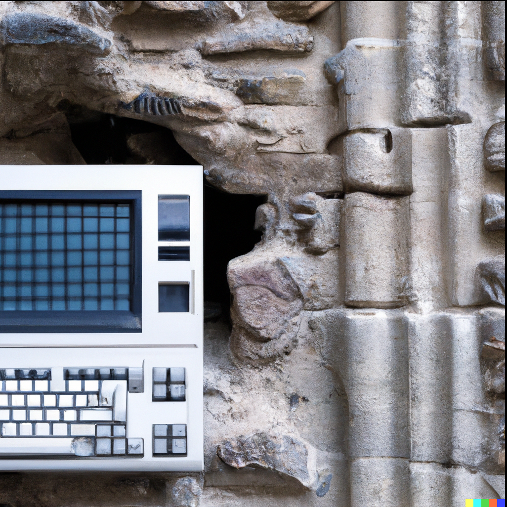

Automation
Techniques to give you more time to design and create.
Processing Files
See adobe-photoshop.md for scripting, actions, and batch processing.
Extracting & Generating Layers
With the Object Selection Tool's Select Subject function...
...Photoshop can automatically map a selection to what it interprets to be the image's subject:
It's not always perfect, but it will give you a better selection than what's manually possible within a reasonable amount of time for most non hard surface or high contrast edge types (compared to using the Object Selection Tool alone). What appears to be happening is an automatic combination of both, selecting the object or overall shape it believes to be the subject, with additional refinement you'd get from adjusting settings found in Select and Mask.... Any areas where it fails to select something accurately can be adjusted manually in much less time.
Repeating this technique as many times as necessary, now you have your subject(s)
To generate the layer data beneath the subject(s), you can...
Paint the transparency with the Spot Healing Brush Tool:
Or loosely select the transparency and use Edit > Fill... > (Content-Aware) > OK:
In both cases the results are, once again, not always perfect. This is OK, you can continue to leverage the Spot Healing Brush Tool to iterate over areas that need refinement.
This will get you within 90% of the image result you're working towards in most cases:
With your layers fully separated, you can get back to creating efficiently with non destructive edits:
DALL-E 2
DALL-E 2 (currently in beta) is an AI powered image generation platform created by OpenAI.
If you haven't already, check the ... menu after logging in to the prompt dashboard to join DALL-E's official Discord.
Prompts
The way to generate images in DALL-E 2 is with text-based prompts, for example:
a photo of a frog dressed as a ship captain sailing a boat during a storm, close up, portrait, digtial art
I've found you can append useful 'keywords' to any 'query'. Similarly you can 'chain' queries to create a specific image.
The queries and keywords can be in any order really.
Based on the examples shown below the prompt on DALL-E's web interface:
- Separating 'keywords' with
,commas may help. - Wrapping strings of text in quotes, like
"<query>"may also help.
For example:
"a photo of a concerned frog, dressed as an astronaut, sailing a space boat during a solar storm", synthwave, wide angle, 3/4 view, depth of field, digital art
Example list of keywords that can modify the resulting image:
wide angle,close up,medium angle3/4 viewmacro lens,35mmdepth of field,motion blura photo of <query>bird's eye view4k3D,2D,CGIconcept art,matte painting,digital art,line art,drawing,pixel art,comic,storyboard,sketch,photoby <artist-name>in style of <style>cyberpunk,vaporwave,synthwave,neon,medieval,glitch,fractalnighttime,daytime,rain,snow,wind,sun,fall,winter,overcast
For more examples on ways to construct a prompt, be sure to check the DALL-E 2 Discord top-tips-and-tricks and faq-and-resources channels.
Editing
DALL-E 2 lets you edit an image directly from the web interface. By masking out parts that you'd like to change, it can reiterate on the same image based on the prompt for different results.
The prompt should describe the entire image not just the elements you're trying to change.
The next section demonstrates this process.
Fixing Cropped Results
Some results will have what you're looking for, but are cropped in a strange way that might obscure part of the subject.
Using Outpainting
https://openai.com/blog/dall-e-introducing-outpainting/
Outpainting was introduced which allows you to extend the image content beyond the initial canvas from directly within DALL-E's editor. The above blog post has a timelapse demonstration of how this works.
Manual Editing
NOTE: This section was created to demonstrate + document the process after seeing this topic mentioned multiple times in the DALL-E Discord.

You can resolve this in a similar way to using Photoshop's Content-Aware Fill which is mentioned above:
- Download and open the image in an external editor (e.g. GIMP)
- Move or scale the image while maintaining the 1024x1024 canvas size
- This leaves transparency where you need further image content generated
- Upload the image to DALL-E 2
- At 'Select a square area to edit' four dots in the corners of the image can be moved to resize the image area
- Leave this square as is to use the entire image
- Choose
Edit image - Target the blank space by
erasingan area within the transparency - You only need to 'click' in a transparent space once with the 'eraser' tool in DALL-E's editor
For example, clicking where the red circle is will be enough for DALL-E 2 to know it needs to target the transparency:
TIP: if you receive an error about nothing being erased, click in the transparency once more and try generating again.
DALL-E 2 will then generate the missing information.
Image to Line Art Automation

The idea here is this method will do 90% of the work. Any artist with good foundational 2D skills will be able to take the result to a finished presentable state.
The difference is this consumes much less time than manually drawing.
Photoshop
- These settings work well with HD / 4K resolution
Filters > Filter Gallery > Sketch > Photocopy, Darkness: 8, Detail: 4;Edit > Stroke > Width: 2px, Location: Center, OK- If the layer exceeds the boundaries of those dimensions (the canvas) you may need more or less detail
- You'll want to run the filter so it's loaded as the last filter used
Ctrl+z, adjust the size of the layer, and run the filter again to see what's working- Use a hotkey to quickly reapply the last filter used
GIMP
- Filters > Artistic > Photocopy
- Stroke (need steps)
Corel
- [missing/needed]
Generally all Photocopy filters produce the same effect. Use the Median filter, or your program's equivalent if the lines need smoothed.
Style Transfer
Transfer the style of one image to another
GIMP + Resynthesizer
TO DO: steps for Windows or macOS
Install the Resynthesizer plugin
The flatpak version is the recommended way to install the latest Resynthesizer plugin. Some Linux distros have all of the available plugins bundled under a gimp-plugin-registry package. This package may not always have Resynthesizer, or work depending on the required dependancies. The flatpak version contains only the Resynthesizer component with everything it requires to run.
Obtain a list of flatpak applications, we only want those that begin with org.gimp.GIMP. in the Application ID:
flatpak search resynthesizer
You'll want to install the version that corresponds to your Gnome Application Platform version:
flatpak info org.gnome.Platform
Install the matching verison with this, replacing <verison> with yours:
sudo flatpak install org.gimp.GIMP.Plugin.Resynthesizer/x86_64/2-<version>
You can also simply run sudo flatpak install resynthesizer and flatpak will walk you through prompts allowing you to select the correct plugin to install.
Resynthesizer can be found under Filters > Map > Resynthesize...
Open your source and destination images.
Optionally duplicate the target layer(s) which you're transfering to, so you can compare them to the originals after.
These settings are a good starting point to accurately map painting styles to real photographs:
| Options | Explaination |
|---|---|
Texture source |
Your source image, the style you want on the destination image |
Output |
Generate machine-like patterns, leave these unchecked |
Context |
Set to Random order, with context |
Texture Transfer |
Check Use texture transfer, this is what maps a style to an image |
Input map |
Your source image, the style you want on the destination image, same as Texture source |
Output map |
The image or layer your style will be transferred to, the destination image |
Map importance |
Set to about 0.80 to maintain the overall content of your destination image |
| Tweaks | Explaination |
|---|---|
Neighborhood size |
Set to 20 |
Search thoroughness |
Set to 200 |
Sensitivity to outliers |
Set to 0.12 |
The Tweaks section will help with performance.
Some or all of the above settings will need adjusted based on each of the input and output factors, as well as the intended result for the destination image.
This operation can be slow depending on your settings. For reference, on a Virtual Machine with 4vCPU and 8GB RAM, transferring styles using the above settings takes roughly 7 minutes on image sizes of Source=1600 x 2000 Destination=3000 x 2500. Using real hardware will likely produce much faster results.
Generate a Color Palette
If there's an image with a color palette you like, you can quickly generate a usable palette with the following:
Photoshop:
- Open the image
- Use
Filter > Pixelate > Mosaicand increase the pixel size by eye (you'll know when you have it right) - Save this as a PNG in a directory that makes sense
- e.g. a folder for a set of images if it's for a specific scene
- e.g. the project root if the entire job requires adherence to a single color palette